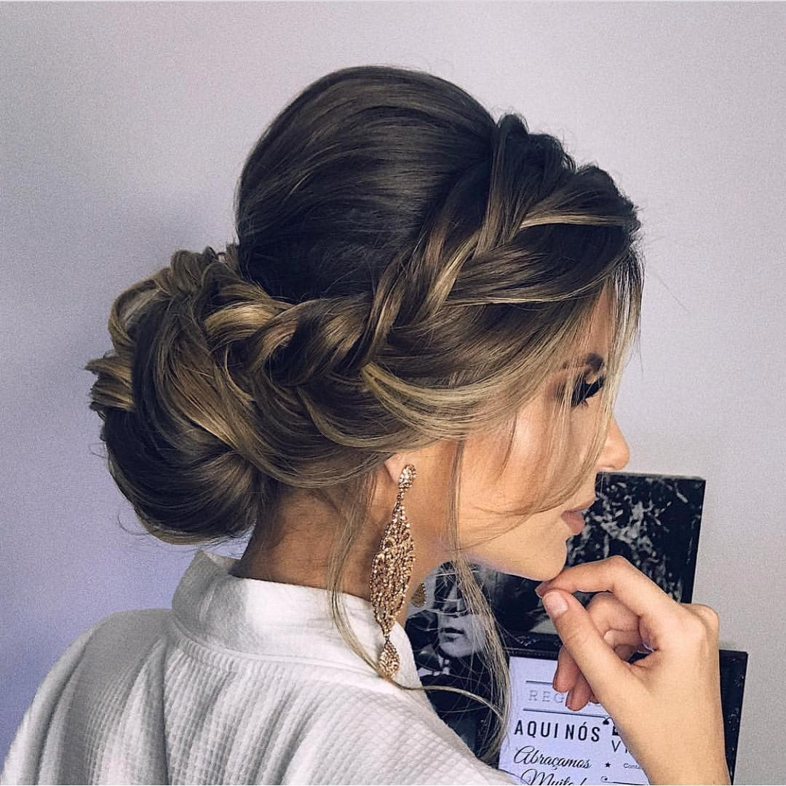
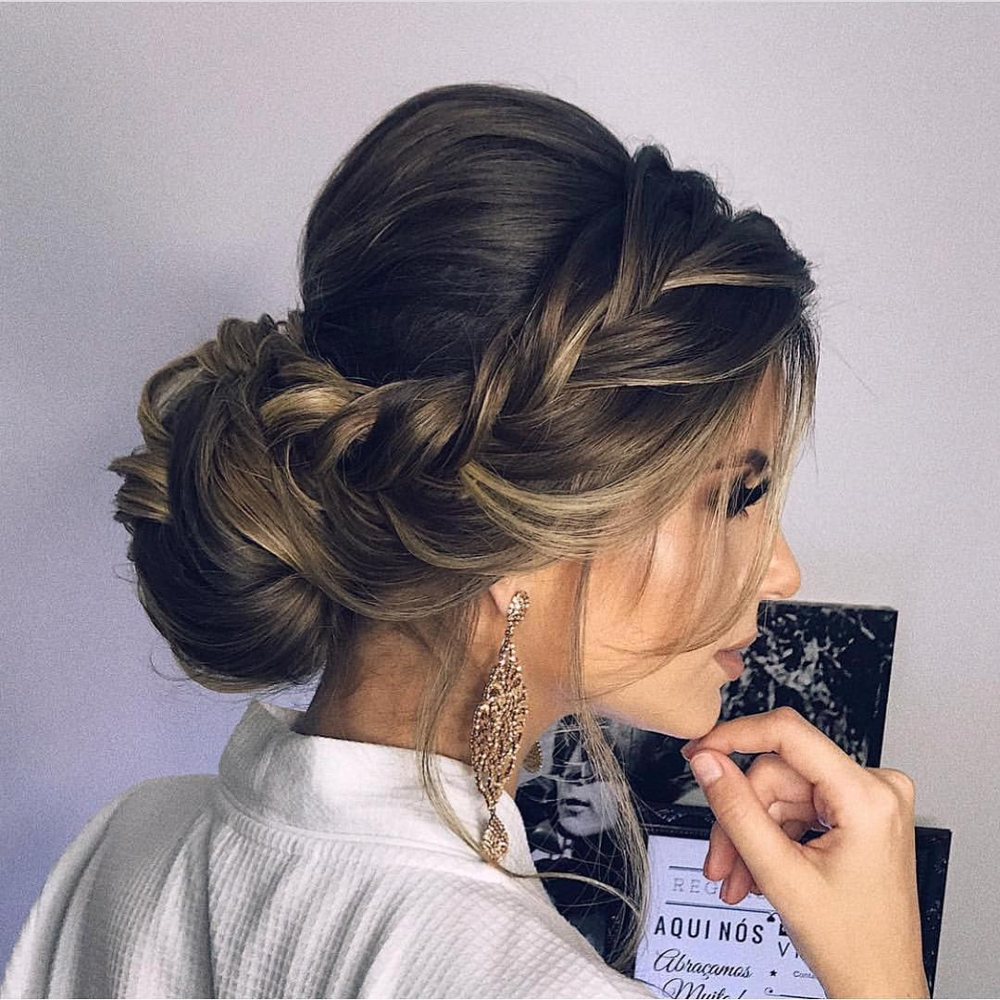
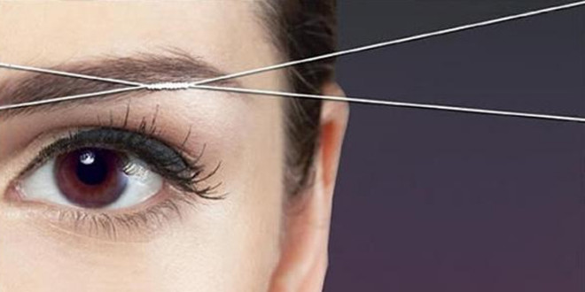
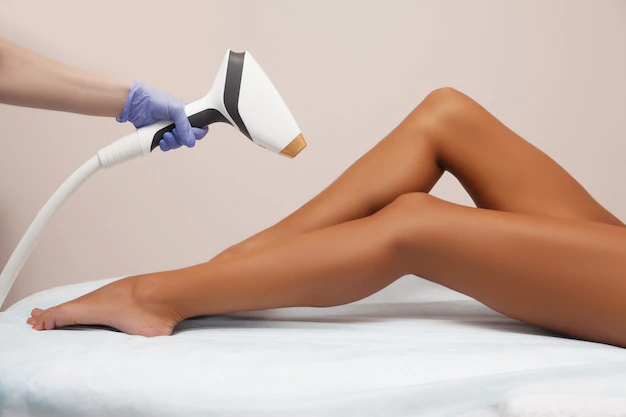
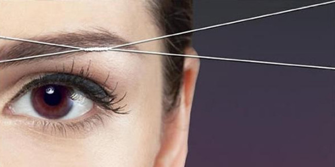
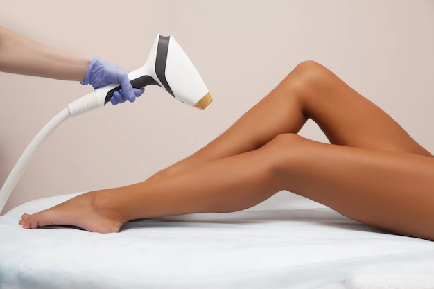

limpeza de pele
Tem como objetivo remover os cravos e as impurezas, desobstruir os poros e melhorar a capacidade de absorção da pelea limpeza de pele também auxilia na oxigenação, hidratação, nutrição e clareamento, podendo ser aplicada em qualquer tom de pele.
sobrancelha com linha
A depilação de sobrancelha com linha consiste em retirar os fios da raiz de forma mais natural, simples e rápida. Utilizando apenas uma linha e lápis para marcação, o método garante menos manutenção, não causa alergias, não provoca manchas e nem agride a pele
Depilação
A depilação é um processo que se leva a cabo para eliminar o pêlo que recobre a pele. Por hábito, é feito em certas regiões corporais que, por motivos estéticos, sociais ou higiénicos, se pretendem manter sem pêlo.
 



 


